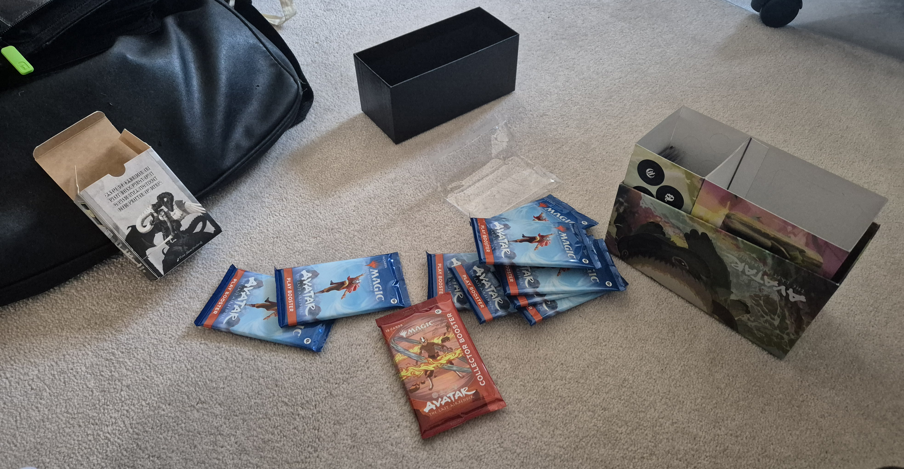

Commander Bundle Opening
It's been a busy few days for Avatar collecting. My Commander Bundle landed today and I spent a good bit of time sorting it into the binders.

My reason for purchasing this sealed product primarily comes down to the set of 13 TLE cards found exclusively in these Bundles. These are all reprints of classic MTG commander staples. Only five of these cards are included in each bundle: three guaranteed, two random. The guaranteed cards are Arcane Signet, Sol Ring, and Swiftfoot Boots. The two random cards are pulled from the remaining set of 10, some of which are worth more than others.
I pulled Flawless Maneuver and Fierce Guardianship. Pretty happy with that result, but if I'm serious about obtaining all 13 I will need to acquire the rest as singles. The retail price on Commander Bundles is already climbing, so opening a second one would be an expensive gamble.
The bundle also came with nine Play Boosters, a tasty Collector Booster, a stack of guaranteed land cards, and a very nice box to store them in. My collection is really starting to come together; these booster packs and lands helped me complete my first five(!) 4×3 pages across the three binders.

The next product to arrive should be the Avatar-themed Beginner Box. I expect it will be here later this week.